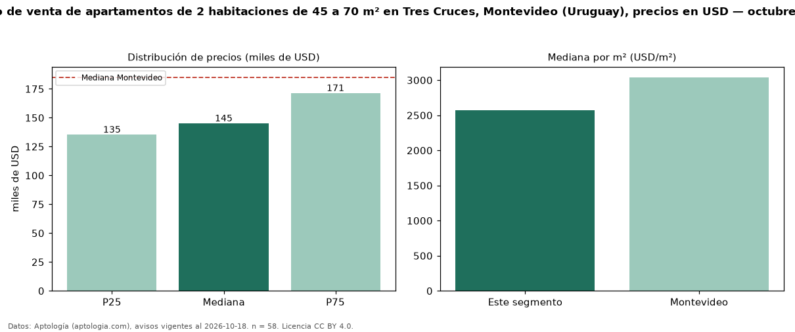

Precio de venta de apartamentos de 2 habitaciones de 45 a 70 m² en Tres Cruces, Montevideo (Uruguay), precios en USD — octubre 2026
En Tres Cruces, Montevideo (Uruguay), la mediana de precio de venta de apartamentos de 2 habitaciones de 45 a 70 m² es USD 145.000, según 58 avisos vigentes. Frente a la mediana de los apartamentos de 2 habitaciones en venta de Tres Cruces (USD 157.000, n = 105), queda 8 % por debajo; este segmento reúne el 55 % de esos avisos. Por metro cuadrado, la mediana es USD 2.570/m² (n = 58), 9 % por encima de los apartamentos de 2 habitaciones en venta de Tres Cruces (USD 2.358/m²). El área mediana anunciada es 60 m². La mediana de todos los apartamentos en venta de Montevideo es USD 185.000 (−22 % de diferencia). La mitad central de los avisos va de USD 135.220 a USD 171.248 (razón 1,3), una dispersión baja. Datos: Aptología (aptologia.com), CC BY 4.0 — https://www.aptologia.com/uy/venta/montevideo/tres-cruces. Archivos: PDF, CSV con las cifras y gráfica PNG.

| Avisos únicos | 58 |
|---|---|
| Percentil 25 | COP 135.220 |
| Mediana | COP 145.000 |
| Percentil 75 | COP 171.247 |
| Mediana por m² | COP 2.569 |
Fuente: avisos vigentes de portales inmobiliarios recopilados por Aptología, deduplicados (mínimo 30 avisos únicos por celda). Precios pedidos, no cerrados. Fecha: 2026-10-18.